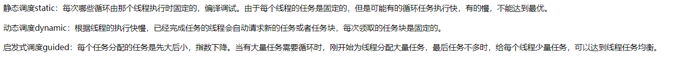

从hello，world开始
1
2
3
4
5
6
7
8
9
10
11
12
13
14
15
16
17
| #include <stdio.h>
#include <stdlib.h>
#include <omp.h>
void Hello(void);
int main(int argc, char* argv[]){
int thread_count = strtol(argv[1],NULL,10);
#pragma omp parallel num_threads(thread_count);
Hello();
return 0;
}
void Hello(void){
int my_rank = omp_get_thread_num();
int thread_count = omp_get_num_threads();
printf("Hello from thread %d of %d\n", my_rank, thread_count);
}
|
使用parallel是用来表明之后的结构化代码块（基本块）应该被多个线程并行执行。
后面跟着的叫做子句，比如num_threads是用来指定执行后代码块的线程数的
执行并行块的线程集合称为线程组，原始的线程称为主线程，额外的线程称为从线程
存在一个隐式路障，完成代码块的线程将等待线程组中所有的其他线程完成代码块。
互斥
1
2
| #pragma omp critical
global_result += my_result;
|
对后面的代码进行互斥访问
归约
共享作用域：一个能够被线程组中的所有线程访问的变量拥有共享作用域
私有作用域：一个只能被单个线程访问的变量拥有私有作用域
1
2
3
4
5
6
7
8
| global_result = 0.0;
#pragma omp parallel num_threads(thread_count)
{
double my_result = 0.0;
my_result += Local_trap(double a, double b, int n);
#pragma omp crtical
global_result += my_result;
}
|
上述代码可以使用归约子句来简化成如下形式：
1
2
3
4
| global_result = 0.0;
# pragma omp parallel num_threads(thread_count) \
reduction(+: global_result)
global_result += Local_trap(double a, double b, int n);
|
代码明确了global_result是一个归约变量，加号表示归约操作符是加法。
注意一下：根据不同的归约操作符，私有变量会初始化为不同的值。
加法：一般初始化为0；乘法：一般初始化为1
for指令
1
2
3
4
5
6
7
| h = (b-a)/n;
approx = (f(a)+f(b))/2.0;
# pragma omp parallel for num_threads(thread_count)\
reduction(+: approx)
for(i = 1; i <= n-1; i++)
approx+= f(a+i*h);
approx = h*approx;
|
reduction子句的使用在这里是必要的
此外，parallel指令中，所有变量的缺省作用域是共享的。但是for指令中的循环变量的缺省作用域是私有的
来一张图！！！《可并行化的for语句的合法表达式》
数据依赖性
一般情况下，上述不能并行的for语句，编译器是会直接报错的。但是有更加隐匿的问题——数据依赖性。
- OpenMP编译器不会检查parallel for指令并行化的循环所包含的依赖关系，需要程序员自己来识别
- 一个或更多个迭代结果依赖于其他迭代的循环，一般不能被正确并行化
以斐波那契数列为例：
- fib[6]和fib[5]计算间的依赖关系称为 数据依赖
- 由于fibo[5]的值在一个迭代中计算，其结果在之后的迭代中使用，所以也称为 循环依赖
关于作用域
与其让OpenMP决定每个变量的作用域，还不如让程序员明确块中每个变量的作用域。
default子句
使用了default（none）子句之后，编译器要求我们明确在块中和在块外声明的所有变量的作用域！
1
2
3
4
5
6
7
8
9
10
11
| double sum = 0.0;
# pragma omp parallel for num_threads(thread_count)\
default(none) reduction(+:sum) private(k,factor)\
shared(n)
for(k = 0; k < n; k ++){
if(k % 2 == 0)
factor = 1.0;
else
factor = -1.0;
sum += factor/(2*k+1);
}
|
奇偶排序
1
2
3
4
5
6
7
8
9
10
11
12
13
14
15
16
17
18
19
20
21
| #pragma omp parallel num_threads(thread_count)\
default(none) shared(a,n) private(i, tmp, phase)
for(phase = 0; phase < n ; phase++){
if(phase % 2 == 0)
# pragma omp for
for(i = 1; i < n; i += 2){
if(a[i-1]>a[i]){
tmp = a[i-1];
a[i-1] = a[i];
a[i] = tmp;
}
}
#pragma omp for
for(i = 1; i < n-1; i += 2){
if(a[i]>a[i+1]){
tmp = a[i];
a[i] = a[i+1];
a[i+1] = tmp;
}
}
}
|
这里的特点就是，只创建了一次线程，在这之后使用已有的线程组来并行化for循环，节省了开销。
调度
调度子句为如下形式：
1
| schedule(<type> [,<chunksize>])
|
type有以下几种类型：
- static：迭代能够在循环执行前分配给线程
- dynamic：当线程完成它当前的迭代集合时，它能从运行时系统中请求更多（开销大于static）
- guided：编译器和运行时系统决定调度方式（开销最大）
- runtime：调度在运行时决定
其中runtime允许在运行时确定调度类型，因此实际调度策略只有前面三种。
一般OpenMP实现的缺省调度为：
1
| schedule (static, total_iterations/thread_count)
|

路障
原子操作
1
2
| # pragma omp atomic
x <op>= <expression>
|
锁
- 简单锁：简单锁在被释放前，只能获得一次
- 嵌套锁：嵌套锁在被释放前，可以被同一个线程获得多次
简单锁的函数定义：
1
2
3
4
| void omp_init_lock(omp_lock_t* lock_P);
void omp_set_lock(omp_lock_t* lock_p);
void omp_unset_lock(omp_lock_t* lock_p);
void omp_destroy_lock(omp_lock_t* lock_p);
|
critical、atomic、lock的区别：
- critical易使用，一般情况下都可以考虑
- atomic可能会把两个变量不一样的语句也强制进行互斥，比如说
x++和y++，需要注意
- 锁机制适用于需要互斥的是某个数据结构而不是代码块的情况。
互斥需要非常谨慎：
-
对同一个临界区，不能混合使用不同的互斥技术
-
互斥不能保证公平性，可能会有一个线程一直被阻塞
-
嵌套互斥可能会产生意想不到的结果：
1
2
3
4
5
6
7
8
9
|
#pragma omp critical
y = f(x)l
...
double f(double x){
# pragma omp critical
z = g(x);
}
|
解决方法，是命名临界区：
1
2
3
4
5
6
7
8
9
|
#pragma omp critical(one)
y = f(x)l
...
double f(double x){
# pragma omp critical(two)
z = g(x);
}
|